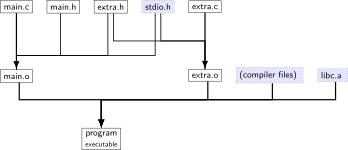
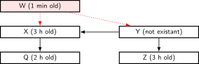
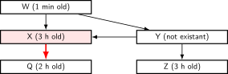
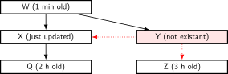
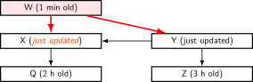
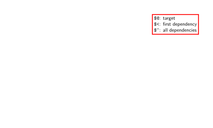
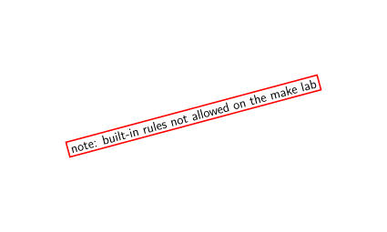

building
files in building C programs [dynamic linking]
![Dependency diagram (repeated with slight variations on several slides) showing source files main.c, main.h, extra.h, stdio.h, extra.c; main.s built from main.c, main.h, extra.h, stdio.h; extra.s built from extra.c, extra.h; main.o built from main.s; extra.o built from extra.s; and program (an executable) built from main.o, extra.o and system files. The program is shown to load libc.so at runtime. The first version of the diagram omits the .s files and then shows the .o files produced from the .c and .h files with commands like "clang -c main.c". Then, the .S files are added with commands like "clang -S -c main.c" that produces them shown. A later slide also show the command "clang -o program main.o extra.o" (used to produce the program from the .o files and some system files).](texfig/c-file-types-files-in-building-c-programs-dynamic-linking.figure-1.svg)
![Dependency diagram (repeated with slight variations on several slides) showing source files main.c, main.h, extra.h, stdio.h, extra.c; main.s built from main.c, main.h, extra.h, stdio.h; extra.s built from extra.c, extra.h; main.o built from main.s; extra.o built from extra.s; and program (an executable) built from main.o, extra.o and system files. The program is shown to load libc.so at runtime. The first version of the diagram omits the .s files and then shows the .o files produced from the .c and .h files with commands like "clang -c main.c". Then, the .S files are added with commands like "clang -S -c main.c" that produces them shown. A later slide also show the command "clang -o program main.o extra.o" (used to produce the program from the .o files and some system files).](texfig/c-file-types-files-in-building-c-programs-dynamic-linking.figure-2.svg)
![Dependency diagram (repeated with slight variations on several slides) showing source files main.c, main.h, extra.h, stdio.h, extra.c; main.s built from main.c, main.h, extra.h, stdio.h; extra.s built from extra.c, extra.h; main.o built from main.s; extra.o built from extra.s; and program (an executable) built from main.o, extra.o and system files. The program is shown to load libc.so at runtime. The first version of the diagram omits the .s files and then shows the .o files produced from the .c and .h files with commands like "clang -c main.c". Then, the .S files are added with commands like "clang -S -c main.c" that produces them shown. A later slide also show the command "clang -o program main.o extra.o" (used to produce the program from the .o files and some system files).](texfig/c-file-types-files-in-building-c-programs-dynamic-linking.figure-3.svg)
![Dependency diagram (repeated with slight variations on several slides) showing source files main.c, main.h, extra.h, stdio.h, extra.c; main.s built from main.c, main.h, extra.h, stdio.h; extra.s built from extra.c, extra.h; main.o built from main.s; extra.o built from extra.s; and program (an executable) built from main.o, extra.o and system files. The program is shown to load libc.so at runtime. The first version of the diagram omits the .s files and then shows the .o files produced from the .c and .h files with commands like "clang -c main.c". Then, the .S files are added with commands like "clang -S -c main.c" that produces them shown. A later slide also show the command "clang -o program main.o extra.o" (used to produce the program from the .o files and some system files).](texfig/c-file-types-files-in-building-c-programs-dynamic-linking.figure-4.svg)
![Dependency diagram (repeated with slight variations on several slides) showing source files main.c, main.h, extra.h, stdio.h, extra.c; main.s built from main.c, main.h, extra.h, stdio.h; extra.s built from extra.c, extra.h; main.o built from main.s; extra.o built from extra.s; and program (an executable) built from main.o, extra.o and system files. The program is shown to load libc.so at runtime. The first version of the diagram omits the .s files and then shows the .o files produced from the .c and .h files with commands like "clang -c main.c". Then, the .S files are added with commands like "clang -S -c main.c" that produces them shown. A later slide also show the command "clang -o program main.o extra.o" (used to produce the program from the .o files and some system files).](texfig/c-file-types-files-in-building-c-programs-dynamic-linking.figure-5.svg)
files in building C programs [static linking]

file extensions
| name | ||
.c
|
C source code | |
.h
|
C header file | |
.s
|
(or .asm)
|
assembly file |
.o
|
(or .obj)
|
object file (binary of assembly) |
| (none) |
(or .exe)
|
executable file |
| .a |
(or .lib)
|
statically linked library |
| [collection of .o files] | ||
| .so |
(or .dll or .dylib)
|
dynamically linked library |
| [‘shared object’] |
static libraries
Unix-like
static libraries: libfoo.ainternally: archive of .o files with index
create:
ar rcs libfoo.a file1.o file2.o …- ‘archive’ utility
arand not normal C compiler
- ‘archive’ utility
use:
cc … -o program -L/path/to/lib … -lfoo- no space between
-land library name cc -L/path/to/libnot needed if in standard location
- no space between
shared libraries (AKA dynamically-linked libraries)
Linux
shared libraries: libfoo.socreate:
- compile .o files with
-fPIC(position independent code) - then:
cc -shared … -o libfoo.so
- compile .o files with
use:
cc … -o program -L/path/to/lib … -lfoocc
-L…sets pathonly when making executable runtime path set separately
finding shared libraries (1)
$ ls
libexample.so main.c
$ clang -o main main.c -lexample
/usr/bin/ld: cannot find -lexample
clang: error: linker command failed with exit code 1 (use -v to see invocation)
$ clang -o main main.c -L. -lexample
$ ./main
./main: error while loading shared libraries:
libexample.so: cannot open shared object file: No such
file or directory$ LD_LIBRARY_PATH=. ./main$ export LD_LIBRARY_PATH=.
$ ./main$ clang -o main main.c -L. -lexample -Wl,-rpath .
$ ./mainfinding shared libraries (1)
cc … -o program -L/path/to/lib … -lfoo- on Linux:
/path/to/libonly used to create program - program contains
libfoo.sowithout full path
- on Linux:
Linux default:
libfoo.soexpected to be in /usr/lib, /lib, and other ‘standard’ locationspossible overrides:
- LD_LIBRARY_PATH environment variable
- paths specified with
-Wl,-rpath=/path/to/libwhen creating executable
exercise (1)
a.c:
void foo() { puts("A"); }b.c:
void foo() { puts("B"); }main.c:
int main() {foo();}$ clang -c main.c -o main.o
$ clang -c a.c -o a.o
$ ar rcs libfoo.a a.o
$ clang main.o -L. -lfoo -o program
$ ./program
A
$ rm libfoo.a
$ clang -c b.c -o b.o
$ ar rcs libfoo.a b.o
$ ./program
exercise: output?
exercise (2)
a.c:
void foo() { puts("A"); }b.c:
void foo() { puts("B"); }main.c:
int main() {foo();}$ clang -c main.c -o main.o
$ clang -fPIC -c a.c -o a.o
$ clang -shared -o libfoo.so a.o
$ clang main.o -Wl,-rpath . -L. -lfoo -o program
$ ./program
A
$ rm libfoo.so
$ clang -fPIC -c b.c -o b.o
$ clang -shared -o libfoo.so b.o
$ ./program
exercise: output?
libraries and command line
when linking against libraries use:
clang -o executable foo.o bar.o -lName
rather than
clang -o executable -lName foo.o bar.oby default, linker processes files in order
might only grab things that previous files needed from library
- (especially for static libraries)
exercise (incremental compilation)
- program built from main.c + extra.c
- main.c, extra.c both include extra.h, stdio.h
clang -c main.c # command 1
clang -c extra.c # command 2
clang -o program main.o extra.o # command 3What commands need to be rerun if…
- Question A: … main.c changes?
- Question B: … extra.h changes?
make
make— Unix program for ‘‘making’’ things…… by running commands based on what’s changed
what commands? based on
rules inmakefile - (text file called
makefileorMakefile(no extension))
- (text file called
make rules
main.o: main.c main.h extra.h
▶ clang -Wall -c main.c
before colon: target(s) (file(s) generated/updated)
after colon: prerequisite(s) (also known as dependencies)
following lines prefixed by a tab character: command(s) to run
makeruns commands if any prereq modified date after target… after making sure prerequisites up to date
make rule chains
program: main.o extra.o
▶ clang -Wall -o program main.o extra.o
extra.o: extra.c extra.h
▶ clang -Wall -c extra.c
main.o: main.c main.h extra.h
▶ clang -Wall -c main.c
- to
make program, first… - update main.o and extra.o if they aren’t
running make
‘‘
make’’target - look in
Makefilein current directory for rules - check if
target - if not, rebuild it (and prerequisites, if needed) so it is
- look in
‘‘
make’’target1 target2 - check if both target1 and target2 are up-to-date
- if not, rebuild it as needed so they are
‘‘
make’’- if ‘‘
firstTarget
same as ‘make’’firstTarget
- if ‘‘
exercise: what will run?
exercise: ‘‘make W’’ will run what commands?| A. none |
B. buildY only
|
C. buildW then buildY
|
D. buildY then buildW
|
||
F. buildX then buildW
|
G. something else |
explanation




first: to make W, need X, Y up to date
- to make X up to date:
need Q up to date \(\checkmark{}\)
then build X if less recent than Q (yes) \(\checkmark{}\) - to make Y up to date: need X up to date \(\checkmark{}\)
need Z up to date \(\checkmark{}\)
then build Y if less recent than X (yes) or Z (yes) \(\checkmark{}\)
- to make X up to date:
then build W if less recent than X (yes, now) or Y (yes) \(\checkmark{}\)
‘phony’ targets (1)
- common to have Makefile targets that aren’t files
all: program1 program2 libfoo.a
- ‘‘
make all’’ effectively shorthand for ‘‘make program1 program2 libfoo.a’’ - no actual file called ‘‘all’’
‘phony’ targets (2)
- sometimes want targets that don’t actually build file
- example: ‘‘
make clean’’ to remove generated files
clean:
▶ rm –force main.o extra.o
but what if I create
clean:
▶ rm –force main.o extra.o
all: program1 program2 libfoo.a
- Q: if I make a file called ‘‘all’’ and then ‘‘make all’’ what happens?
- Q: same with ‘‘clean’’ and ‘‘make clean’’?
marking phony targets
clean:
▶ rm –force main.o extra.o
all: program1 program2 libfoo.a
special .PHONY rule says ‘‘ ‘all’ and ‘clean’ not real files’’
(not required by POSIX, but in every
makeversion I know)
conventional targets
common convention:| target name | purpose |
(default), all
|
build everything |
install
|
install to standard location |
test
|
run tests |
clean
|
remove generated files |
redundancy (1)
program: main.o extra.o
▶ clang -Wall -o program main.o extra.o
extra.o: extra.c extra.h
▶ clang -Wall -o extra.o -c extra.c
main.o: main.c main.h extra.h
▶ clang -o main.o -c main.c
- what if I want to run
clangwith-fsanitize=addressinstead of-Wall? - what if I want to change
clangtogcc?
variables/macros (1)
CC = gcc
CFLAGS = -Wall -pedantic -std=c11 -fsanitize=address
LDFLAGS = -Wall -pedantic -fsanitize=address
LDLIBS = -lm
program: main.o extra.o
▶ $(CC) $(LDFLAGS) -o program main.o extra.o $(LDLIBS)
extra.o: extra.c extra.h
▶ $(CC) $(CFLAGS) -o extra.o -c extra.c
main.o: main.c main.h extra.h
▶ $(CC) $(CFLAGS) -o main.o -c main.c
aside: conventional names
- chose names
CC,CFLAGS,LDFLAGS, etc. - not required, but conventional names (incomplete list follows)
CCC compiler CFLAGSC compiler options LDFLAGSlinking options LIBSorLDLIBSlibraries
variables/macros (2)
CC = gcc
CFLAGS = -Wall
LDFLAGS = -Wall
LDLIBS = -lm
program: main.o extra.o
▶ $(CC) $(LDFLAGS) -o $@ $^ $(LDLIBS)
extra.o: extra.c extra.h
▶ $(CC) $(CFLAGS) -o $@ -c $<
main.o: main.c main.h extra.h
▶ $(CC) $(CFLAGS) -o $@ -c $<
aside: $^ works on GNU make (usual on Linux), but not portable.

aside: make versions
multiple implementations of
makefor stuff we’ve talked about so far, no differences
most common on Linux: GNU make
will talk about ‘pattern rules’, which aren’t supported by some other make versions
- older, portable, (in my opinion less intuitive) alternative: suffix rules
pattern rules
CC = gcc
CFLAGS = -Wall
LDFLAGS = -Wall
LDLIBS = -lm
program: main.o extra.o
▶ $(CC) $(LDFLAGS) -o $@ $^ $(LDLIBS)
%.o: %.c
▶ $(CC) $(CFLAGS) -o $@ -c $<
extra.o: extra.c extra.h
main.o: main.c main.h extra.h
aside: these rules work on GNU make (usual on Linux), but less portable than suffix rules.
built-in rules
- ‘make’ has the ‘make .o from .c’ rule built-in already, so:
CC = gcc
CFLAGS = -Wall
LDFLAGS = -Wall
LDLIBS = -lm
program: main.o extra.o
▶ $(CC) $(LDFLAGS) -o $@ $^ $(LDLIBS)
extra.o: extra.c extra.h
main.o: main.c main.h extra.h
- (don’t actually need to write supplied rule!)



writing Makefiles?
error-prone to write all .h dependencies
-MM(and related) options togccorclang- outputs make rule
- ways of having make run this + use output
Makefile generators
- other programs that write Makefiles
other build systems
alternatives to writing Makefiles:
other make-ish build systems
- ninja, scons, bazel, maven, xcodebuild, msbuild, …
tools that generate inputs for make-ish build systems
- cmake, autotools, qmake, …